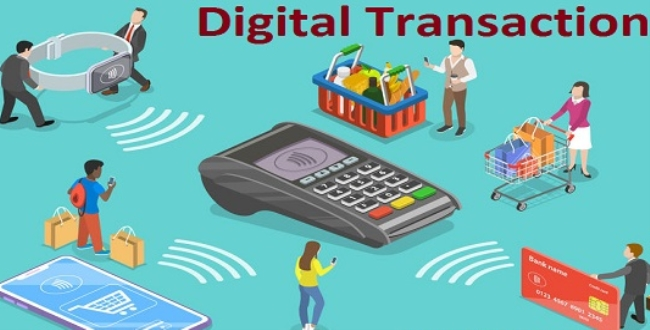
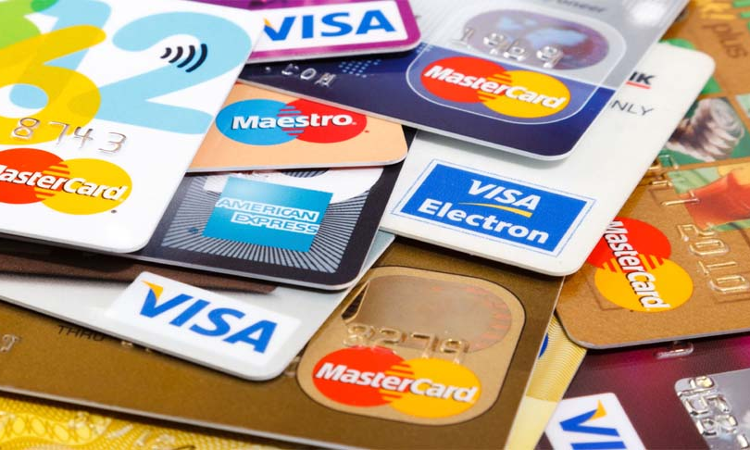
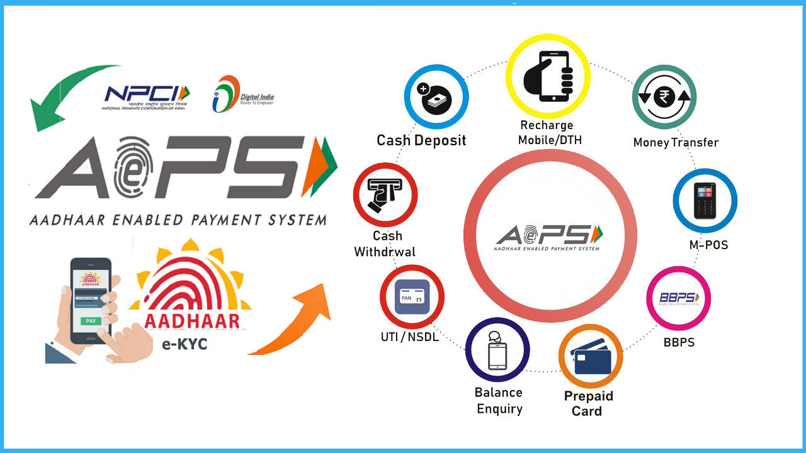
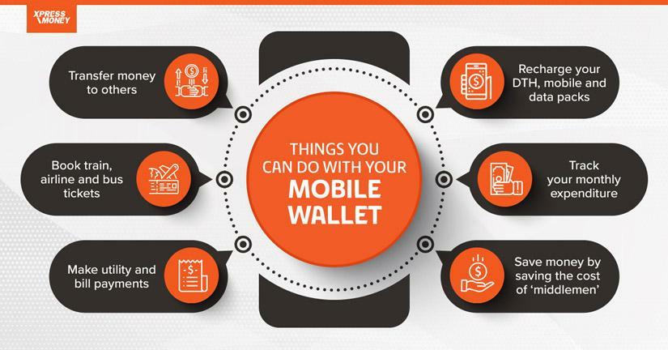

Digital payments are transactions that occur via digital or online modes. This means both the
payer and the payee use electronic mediums to exchange money.
The Government of India has taken several measures to promote and encourage digital payments. As part of the
‘Digital India’ campaign, the government aims to create a ‘digitally empowered’ economy that is ‘faceless,
paperless, and cashless’. There are various methods and types of digital
You must note that digital payments can take place through the Internet as well as on physical premises. Here
are some examples of digital payments, buying something from e-commerce platforms and paying for it via UPI
(unified payments interface) qualifies as a digital payment. Similarly, if you purchase something from your
local grocery store and choose to pay via UPI, that also is a digital payment.
Now that you clearly understand what is digital payment, let us understand the process of payments.

HOW DOES DIGITAL PAYMENTS WORKS??
Have you ever wondered how digital payments really work? Let’s simplify it for you in this
section.
1. TD
For digital payments, merchants and consumers participate as customers, so they need to have bank accounts with
online banking features. Bank accounts build up the foundation of conducting e-transactions by storing funds
securely and endorsing transfers.
3. Step-by-step Transaction
The consumer starts payment transactions using UPI, mobile wallets or a similar option of his choice.
The payment details are transmitted securely into the payment network.
The payment network checks for the balance, thereafter, funds are moved from the consumer’s bank account to the
payee’s bank account.
A confirmation is sent to both the buyer and seller to confirm that the transaction has been completed.
4. Payment Rail
Payment rails serve as the backbone infrastructure that enables the transfer of funds between banks. They
function as the pathways through which transactions move, linking institutions and guaranteeing the smooth flow
of funds. Payment rails exist in many formats, such as automated clearing house (ACH), card networks and
real-time payment systems, each designed for transaction types and processing speeds.
TYPES OF DIGITAL PAYMENTS
Here are the types of digital payments that are following:
1. Banking Cards
Indians widely use banking cards, debit/credit cards, or prepaid cards as an alternative to cash payments. In
1981, the Andhra Bank launched the first credit card in India.
Cards are preferred because of multiple reasons, including, but not limited to, convenience, portability,
safety, and security. This is the only mode of digital payment that is popular in online and physical
transactions. Many apps are being launched to manage card transactions, like Cred, Square, etc.

2. Unstructured Supplementary Service Data(USSD)
The unstructured supplementary service data (USSD) was launched for those sections of India’s population which
do not have access to proper banking and internet facilities. Under the USSD, mobile banking transactions are
possible without an internet connection by dialling *99# on any essential feature phone.
This number is operational across all telecom service providers (TSPs) and allows customers to avail of
services, including interbank account-to-account fund transfer, balance enquiry, and availing of mini
statements. Around 51 leading banks in India offer USSD service in 12 languages, including Hindi and
English.
3. Aadhaar Enabled Payment System (AEPS)
The Aadhaar Enabled Payment System (AEPS) is a bank-led model for digital payments initiated to leverage the
presence and reach of Aadhar. Under this system, customers can use their Aadhaar-linked accounts to transfer
money between two Aadhaar-linked bank accounts. According to data from the National Payments Corporation of
India (NPCI), the AEPS had crossed transactions over 205 million till February 2020.
The AEPS does not require physical activity like visiting a branch, using debit or credit cards or signing a
document. This bank-led model allows digital payments at PoS (point of sale / micro ATM) via a business
correspondent, known as Bank Mitra, using Aadhaar authentication. The AePS fees for cash withdrawal at Business
Correspondent points are around ₹15.

4. Unified Payments Interface (UPI)
The UPI is a payment system that culminates numerous bank accounts into a single application, allowing money
transfers between parties. Compared to NEFT(national electronic funds transfer), RTGS (real-time gross
settlement), and IMPS (immediate payment service), the UPI is considered a well-defined and standardised process
across banks. You can use UPI to initiate a bank transfer anywhere in just a few clicks.
The benefit of using UPI is that it allows you to pay directly from your bank account without the need to type
in the card or bank details. This method has become one of the most popular digital payment modes in 2020, with
October witnessing over 2 billion transactions.
5. Mobile Wallets
As the namesuggests, mobile wallets are a type of wallet where you can carry cash in a digital format. Often,
customers link their bank accounts or banking cards to their wallets to facilitate secure digital transactions.
Another way to use wallets is to add money to the mobile wallet and use the balance to transfer money. You can
also check out the digital wallets guide, for necessary details and clarify confusions, if any. Nowadays, many
banks have launched their wallets. Additionally, notable private companies have established their presence in
the mobile wallet space. Some popularly used ones include Paytm, Freecharge, Mobikwik, mRupee, Vodafone M-Pesa,
Airtel Money, Jio Money, SBI Buddy, Vodafone M-Pesa, Axis Bank Lime, ICICI Pockets ,etc.

6. PoS Terminals
The PoS is the location or segment of a sale. These terminals were considered checkout counters in malls and
stores where payments were made for a long time. The most common type of PoS machine is for debit and credit
cards, where customers can make payments by simply swiping the card and entering the PIN (personal
identification number).
With digitisation and the increasing popularity of other online payment methods, new PoS methods have emerged.
First is the contactless reader of a PoS machine, which can debit any amount up to ₹2000 by auto-authenticating
it without needing a PIN.
7. Mobile Banking
Mobile banking refers to conducting transactions and other activities via mobile devices, typically through the
bank’s mobile application (app). Today, most banks have mobile banking apps that can be used on handheld devices
like mobile phones and tablets and sometimes on computers.
Mobile banking is known as the future of banking, thanks to its ease, convenience, and speed. Digital payment
methods, such as IMPS, NEFT, RTGS, and other services like investments, bank statements, bill payments, etc.,
are available on a single platform through mobile banking apps. Banks encourage you to operate digitally as it
makes processes easier for them. >
BENIFITS OF DIGITAL PAYMENTS
There are several benefits of digital payments. After the launch of Cashless
India,(which aims to promote a cashless economy), we currently have ten digital payment methods available in
India. Some digital payment methods have been used for over a decade, some have recently gained popularity,
while others are relatively new.
1. Faster Payments
Digital payments allow immediate transactions that can be processed immediately, reducing the waiting time that
one has to go through with traditional payment methods. This makes transactions seem smooth and efficient.
2. Convenience in the Payment Procedure
Digital payments enable swift and hassle-free transactions from your devices, eliminating the need for physical
presence or documents. Whether you’re paying bills, shopping online, or transferring funds, digital payment
methods offer a user-friendly experience that saves both time and effort.
3. Better Payment Security
Digital payment systems use encryption and system authentication protocols, which minimise the risk of
unauthorised access and effectively prevent fraud. Your financial information is protected, keeping you
stress-free throughout the entire process of making digital payments.
4. Improved Efficiency
Automation and digitisation in payment processes have significantly enhanced operational efficiency. By
minimising manual intervention, errors are reduced, and financial workflows are streamlined, resulting in a more
efficient and error-free system.
Digital Record of Transactions: Digital payments provide a traceable account of transactions, thereby
guaranteeing safety. Such efficiency and credibility allow individuals and businesses to maintain accurate
financial records. It is easy to monitor the payment history and can be referred to when required.
5. Reduced Costs
The digital payment framework eliminates the requirement of physical infrastructure, paperwork, and manual
handling. This reduces the cost of transactions for business enterprises and financial institutions. Also,
digital transactions usually include a lower cost of transfer as compared to traditional banking methods.
6. Discounts and Savings
Many online platforms provide discounts, cashback, or loyalty programmes. These discounts motivate the customers
to go for the digital payment option, which saves them money and provides several benefits.
7. Low Risk of Theft
Digital payments diminish the possibility of the actual loss of money since it’s not physical. Transactions
occur in the digital world, therefore rendering the necessity of holding large amounts of currency physically
unnecessary. This safeguards payments by preventing direct cash transactions and ensuring their
protection.
8. Customer Management
Digital payment systems can frequently oversee and monitor the customers’ transactions, preferences, and
feedback, which gives the business more control over these aspects. This improves overall customer management by
adjusting service offerings based on customer behaviour.
9. Better Customer Experience
The ease and convenience offered by digital payments enable customers to enjoy superior service, thereby
enhancing their experience. Simplified payment processes result in increased customer satisfaction and a greater
likelihood of future collaboration with the business.
10. Efficient Record-Keeping Features
Through the digital infrastructure, digital payments for offline businesses are recorded efficiently; thus, the
business environment is friendlier than before. Today businesses and individuals can easily track, control, and
analyse their financial activities to obtain financial transparency and improve the financial management
process.
SIGNIFICANCE OF DIGITAL PAYMENTS
The Significance of Payment Processing Systems in the Modern World
In an era of rapidly advancing technology and evolving consumer behaviors, payment processing systems have
emerged as a cornerstone of the modern global economy. These systems, once perceived as mere tools for
facilitating transactions, have now grown to play a pivotal role in shaping the way businesses operate and
consumers interact with the financial world. From online shopping to contactless payments, the significance
of payment processing systems cannot be overstated.
1.Evolution of Payment Processing Systems
Today, payment processing systems have evolved to encompass a wide array of methods, including mobile wallets,
cryptocurrencies, and even biometric authentication. These systems are not only faster and more convenient but
also offer enhanced security measures to protect sensitive financial information.
2.Facilitating Global Commerce
One of the most significant contributions of payment processing systems to the modern world is their role in
facilitating global commerce. In the past, international transactions were often cumbersome and time-consuming,
involving complicated currency conversions and cross-border banking processes. Payment processing systems have
eliminated many of these barriers.
3.Empowering Digital Transformation
Payment processing systems enable businesses to create user-friendly online platforms, offer secure payment
gateways, and provide seamless checkout experiences. This not only caters to the preferences of modern consumers
but also opens up new revenue streams for companies.
4.Enhanced Security and Fraud Prevention
As digital transactions become more prevalent, concerns about security and fraud have also grown. Payment
processing systems have responded by implementing advanced security measures to protect sensitive financial
data. Encryption, tokenization, and multi-factor authentication are just a few examples of the technologies
employed to ensure the safety of transactions.
5.Financial Inclusion and Access
The modern world is characterized by the abundance of data, and payment processing systems contribute to this by
generating valuable transactional data.
6.Green initiatives and Sustainability
As global awareness of environmental issues grows, businesses are under increasing pressure to adopt sustainable
practices. Payment processing systems have responded to this trend by offering eco-friendly solutions. Digital
payments, which eliminate the need for paper checks and physical receipts, contribute to reducing paper waste.
Furthermore, some payment processing systems have integrated carbon offset programs, where a portion of
transaction fees goes toward environmental initiatives. This aligns with the growing consumer preference for
environmentally conscious businesses.
About
I learned various aspects of digital transactions including the payment systems or online
payment methods.payment systems enable the transfer of funds between individuals, business and facilitating
various transactions such as online shopping,bill payments,money transfers,card transactions,bank
transactions, investment transactions etc.
Payment system plays a vital role in facilitating transactions and enables economic growth.
Through online payment systems we can pay or sell the goods.It provides services on e-commerce websites.
We can easily and securly pay recharge and bills like mobile recharge, FASTag recharge,DTH,rent,water ,
electricity and education fees etc from anywhere and at anytime.and also there are several card transactions
used in payment system such as credit card transactions,debit card transactions,prepaid card transactions .
We can also use the digital wallets.digital wallets have various uses in the payment systems such as
contactless payments that make tap to pay transactions in store through online.digital payments help us to
send and receive the funds between individuals or business.
ACTIVITY
Week 1
Conducted an awareness program on digital transactions at leguntapadu village in Nellore
dist in this way and started my
project.Conducted survey in our area to know how well people are aware about digital
Transactions.Continued conducting
survey in our area to know more about all the digital transactions.Explained the advantages and uses
about the digital
transactions which are known to me .I planned how to spread awareness and to use some more instructions
3which are not
known to the people of our area related to digital transactions.
Week 2
For my personal information I have Visited the bank in our local area of the
inamadugu.Continued conducting survey at bank and understood briefly about digital transactions
Conducted an awareness program on installation of UPI payment apps. Continued the installation of
different UPI payment apps in different areas of leguntapadu. Explained about the particular apps Such
as PHONE PE,GOOGLE PE,PAYTM,....etc..Continued explaining about the private business paying platforms
such as AMAZON PAY and BHARATH PE
Week 3
I Have verified the detailed process of various digital transactions. I Visited some
various kinds of merchants retail shops and some others
Conducted an awareness program on explaining the various types of Digital payments to the local
people.Conducted an survey on college students.I helped the farmers in usage of using various methods of
digital payments.Studied about the Different methods and types of digital payments.
Week 4
I known about the Importance of Digital Transaction in Cost Saving.Studied about the major challenges faced in digital transactions.Discussed about the major benefits of UPI to Banks& Fintech.Conducted an survey on Mobile Banking.I known about the Barriers to used in Digital Transactions from the local people in our area.Visited many areas and conducted an survey on overall understanding on smart and journey of digital payments.
Week 5
I want to know about the overview of current regulations governing digital payments.I wanted to create awareness about the help centers and payment issues.I have conducted a survey about automatic money debiting from the user account. have conducted a survey to know about the disadvantages regarding the payment issues.I have conducted a survey on overview of digital transactions that I have learned previous.I wanted to give a conclusion regarding digital transactions.
Week 6
I had created an awareness program on Affecting factors of Digital transactions.Studied about the some of the government initiatives taken by the government.Discussed about the various modes of digital payment.Conducted an awareness program on benefits for government and benefits for people.I known and discussed about the major reasons for failure of digital transaction.on the last day of my community service project I had given conclusion of Digital Transactions what I had been learned in these days.
CONTACT US
email:digitaltransaction23@gmail.com
CONCLUSION
The success of digital payments in India has been remarkable, driven by the government's
push towards a cashless economy and the adoption of UPI. Digital payments have had a positive impact on
the economy, leading to financial inclusion, reducing the use of cash, and boosting the fintech
industry. However, there are still several challenges that need to be addressed, such as the lack of
digital infrastructure in rural areas and the issue of cybersecurity and fraud. The government and
financial institutions need to continue working towards creating a secure and accessible digital payment
ecosystem that benefits all sections of society.


 >
>